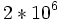

![[Main Page]](../../rsrc/bci2000logo.svg)
EEG Measurement Setup
User Tutorial
This page describes the physical setup required for EEG measurements. EEG utilizes metal electrodes attached to a human subject's scalp, measuring tiny electrical potentials which reflect the brain's electrical activity. Although setting up amplifier and electrodes appears simple and straightforward, a successful, good quality EEG recording requires attention to not-so obvious details, and some practice.
Contents
Electrodes
An EEG amplifier measures voltage differences between points on the scalp. This implies that each channel is connected to two electrodes. Usually, measurement is "unipolar" rather than "bipolar", which means that the second electrode is identical for all channels, and called "reference" (Ref). Also, amplifier inputs must be kept within a small voltage range relative to the amplifier's zero (ground) voltage level. This is achieved by connecting yet another electrode, a "ground" (Gnd) electrode, to the subject's scalp.
EEG electrodes are small metal plates that are attached to the scalp using a conducting electrode gel. They can be made from various materials. Most frequently, tin (Sn) and silver/silver-chloride (Ag/AgCl) electrodes are used but there are gold (Au) and platinum (Pt) electrodes as well.
While Sn electrodes have the advantage of being cheap, they introduce a large amount of low-frequency noise ("drifting") below 1Hz. For low-frequency recordings, such as Slow Cortical Potential measurements, or low-noise ERP recordings, Ag/AgCl electrodes are typically used.
Important but often neglected: Using electrodes made from different materials in the same recording will result in DC voltage offsets between electrodes, due to electrochemical contact potentials. Such contact potentials are generally larger than what a typical amplifier tolerates. The result will be a zero or much diminished signal amplitude, and a bad signal-to-noise ratio. This applies to all amplifier inputs, i.e. channels, reference, and ground electrodes must all be made from the same material.
The 10-20 International System
The 10-20 international system is the standard naming and positioning scheme for EEG applications. It is based on an iterative subdivision of arcs on the scalp starting from craniometric reference points: Nasion (Ns), Inion (In), Left (PAL) and Right (PAR) pre-auricular points. The intersection of the longitudinal (Ns-In) and lateral (PAL-PAR) is named the Vertex.
The original 10-20 system included only 19 electrodes (see panel B of the figure). Later on, extensions were proposed so that now you can place over 70 electrodes in standard positions (see panel C of the figure). This extension also renamed four electrodes (marked in black in the figure); the original names were: T3, T5, T4, and T6 for T7, P7, T8, and P8, respectively.
Sometimes, one of the electrodes mounted in these positions is used as reference channel. More often, ear lobe or mastoid (i.e. bony outgrowth behind the ear) are used.
Important Brain Areas and Landmarks
Often, it is important to assess whether a given brain signal topology makes sense with regard to a-priori knowledge about sources of interest. In most cases, there is a direct correspondence between major brain features, and electrode positions in the 10-20 international system.
In the image displaying electrode positions above, two of these features are indicated by thin lines, and may be identified easily when using a properly placed EEG cap:
- The central sulcus (rolandic fissure) separates the frontal lobe from the parietal lobe. Its course corresponds to the thin lines touching CPz-C2-C4 and CPz-C1-C3, respectively. The two gyri immediately neighboring the central sulcus are the
- primary motor cortex (in frontal direction), and
- primary sensory cortex (in occipital direction).
- The course of the lateral sulcus corresponds to the lines C8-FT8-FT10 resp. C5-FT7-FT9. It separates the temporal lobe from the remaining parts of the brain.
Electrode Placement
Accurate placement of many electrodes on the scalp is time consuming and requires practice. EEG caps greatly facilitate this process. These caps are made of elastic fabric (often available in different sizes), and electrodes are already fixed in the proper configuration. One proven technique to place electrodes using such caps is the following:
- Mark the vertex on the subject's scalp using a felt-tip pen or some other similar method. Begin by locating the nasion and inion on the subject as indicated in panel A of the figure above. Using a tape measure, find the distance between these two locations. The point half-way between the two points is the vertex. Make a mark at that point for later reference. (Other 10-20 points could be located in a similar manner.)
- Mark scalp positions for Fpz and Oz. The Fpz position is above the nasion 10% of the distance from the nasion to the Inion. The Oz position is above the inion the same distance.
- Identify the Cz electrode on the EEG cap and place the cap to position the Cz electrode on the vertex.
- Keeping Cz fixed, slide the cap onto the head.
- While ensuring that Cz does not shift, adjust the cap such that the Fz-Cz-Pz line is on the midline; Fp1-Fp2 line is horizontal, and at the level of the Fpz mark; the O1-O2 line is horizontal, and at the level of the Oz mark.
- You can now fix Ref and Gnd electrodes. These electrodes are attached in one of a few typical configurations. One common configuration is to attach the Ref electrode to one earlobe, and the Gnd electrode to the mastoid on the same side of the head. Another possible configuration is to attach Ref to one mastoid and Gnd to the other mastoid. This choice is influenced by the used cap technology, which may have dedicated electrodes outside the cap for reference and ground, or may have these electrodes embedded in the cap directly.
Noise Reduction
Impedance
Impedance between the scalp and electrodes, measured in kOhm, is a main factor of the recording signal quality. While introducing low frequency noise, high impedance can also indicate a poor conductivity between electrodes and the underneath skin. Rubbing the skin using a wood stick can break the dry tissue on the surface of the skin and increase conductivity. For wet electrodes, sufficient gel can moist the skin throughout times, which lowers the impedance.
To measure the current impedance,
- In the operator module, click Config.
- In the Source tab:
- Set AcquisitionMode to impedance measurement.
- Set FilterEnabled to 0
- Set NotchEnabled to 0
- In the operator module, click Set Config.
To inspect current signal quality without filters,
- In the Source Signal module, right click.
- Set High Pass to 0.1Hz
- Set Low Pass to off
- Set Notch to off
- Impedance Measurement

Electrode impedance before rubbing the skin and applying more gel

Noisy Signal

Electrode impedance after rubbing the skin and applying more gel

Good Signal


{kind=link}
To switch back to recording mode,
- In the operator module, click Config.
- In the Source tab:
- Set AcquisitionMode to analog signal acquisition.
- Set FilterEnabled to 1
- Set NotchEnabled to 1
- In the operator module, click Set Config.
To inspect current signal quality with filters,
- In the Source Signal module, right click.
- Set Notch to 60Hz
Grounding
Brain signal quality can also be interfered by surrounded electronics. Unshield power adapters of monitors or running cables in the nearby walls can induce noise to the raw signal. While filtering can take care of most noise, physically removing the source of noise can achieve higher signal quality. One good way is to ground the subject though the amplifier. The gUSBamp of our example has a grounding outlet on the back. Subject can also inspect the effect of grounding by touching the metal case of the amplifier. Both can achieve a cleaner signal at the source level.
EEG Artifacts
Mains Interference
Electrical power lines use sinusoidal voltages with a frequency of 50 or 60 Hz, depending on your country. Generally, 50Hz are used in Europe, Asia, Africa, and parts of South America; 60Hz are used in North America, and parts of South America.
Mains voltage is typically 110 or 230 Volts, and thus exceeds the EEG's 50 to 100 Microvolts by a factor of , or 126 dB. Therefore, mains interference is ubiquitous in EEG recordings, especially if taken outside specially equipped, shielded rooms, and EEG amplifiers usually provide a so-called notch filter that suppresses signals in a narrow band around the mains frequency in question.
Amplifier notch filters are designed to suppress a certain amount of mains interference. When there is mains interference still visible in the signal after activating the amplifier's notch filter, this is often due to high electrode impedance.
{kind=link}
Eye Blink Artifacts
Eye blink artifacts are generated by fast movement of the eyelid along the cornea, as it happens during an eye blink. By friction between lid and cornea, this movement results in charge separation, with a dominantly dipolar charge distribution, and the dipole moment pointing in up-down-direction.
In the EEG, this is recorded as a positive peak lasting a few tenths of a second, mainly visible in the frontopolar region, but propagating to all the electrodes of the montage, becoming weaker with distance from the front.
For blink artifacts, the power contained in their frequency components in the alpha band is negligible, so they produce no apparent effect on SMR data analysis (as long as their number is reasonable). At the same time, their amplitude is quite large so that time domain analyses (such as averaged P300 wave forms) can be strongly influenced by their presence.
{kind=link}
Eye Movement (EOG) Artifacts
EOG artifacts are produced by eye movements, and generated by a frictive mechanism similar to the one underlying blink artifacts but involving retina and cornea rather than cornea alone.
The effect on frontopolar and frontotemporal electrodes can be symmetric or antisymmetric, depending whether the movement is vertical or horizontal, respectively.
The effect of eye movement artifacts on frequency- or time-domain analysis is quite similar to that of blink artifacts, except that their frequency content is even lower, and amplitudes tend to be larger.
{kind=link}
Muscular (EMG) Artifacts
EMG activity must be carefully checked at the beginning of each recording, and verified throughout the recording. Its effect can completely obscure any frequency analysis. Most common sources of EMG are the muscles that lift the eye brows, and those which close the jaw. Both groups are inadvertently contracted as a consequence of a psychological effort. Keeping the mouth slightly open (or the tip of the toungue between the foreteeth) is a good strategy to avoid jaw-generated EMG.
{kind=link}
Next Step
- If you're following the Mu Rhythm BCI Tutorial, please proceed to Obtaining Mu Rhythm Parameters in an Initial Session.
- If you're following the P300 BCI Tutorial, please proceed to Obtaining P300 Parameters in a Calibration Session.
See also
User Tutorial:Mu Rhythm BCI Tutorial, User Tutorial:P300 BCI Tutorial